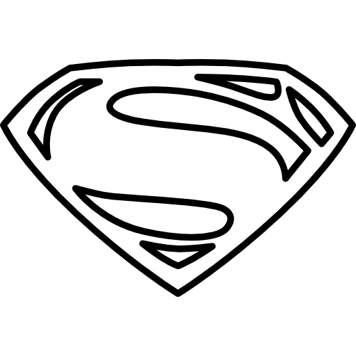

Desde su creación hacia finales de la década de los 30's, los superhéroes se han ganado el
corazón del mundo, teniendo a algunos de los personajes ficticios más icónicos en la cultura
popular moderna. Y en este blog les hablaremos acerca de los comentarios políticos, las
historias y controversias que rodean a estos personajes y sus historias, pero
principalmente, qué es lo que hace a estos seres tan especiales que los han llevado de ser
historias para nerds a los reyes de la cultura pop.
Desarrollo
Los superhéroes cumplen el propósito que los mitos y leyendas cumplían en el antepasado,
crear un mundo lleno de héroes y personajes más grandes que la vida misma, que serían
capaces de levantar el mundo en sus espaldas, dioses entre nosotros, en los cuales podemos
vernos reflejados e inspirados en para convertirnos en mejores personas.
Aquello que hace interesante a los superhéroes no son sus poderes ni sus batallas contra los
villanos de la semana, no es el "súper" de Superman lo que hace a Clark Kent un gran
personaje, sino el "man"(hombre), en estas historias los autores reflejan sus propias vidas,
sus propios problemas, sus propias perspectivas e ideologías. Por lo que una de las cosas en
las cuales nos enfocaremos en este blog es analizar la historia detrás de estos personajes,
qupe significan y representan según el contexto histórico de su creación, y qué es lo que
sus creadores querían expresar con ellos.
Motivación
Desde que éramos pequeños los superhéroes han tenido un gran impacto en nuestras vidas,
siendo ellos aquellos con lo que comenzamos a aprender sobre los valores como bondad y
responsibilidad, pero también fueron nuestra introducción al mundo de la ficción. Hemos
crecido viendo el apogeo de los universos cinematográficos que dieron inicios gracias a
estos personajes. Y ahora vivimos en un mundo donde más que nunca, estos héroes y villanos
son íconos de nuestra cultura moderna y cada una de sus películas es un evento cultural. Por
lo que queremos expresar personalmente lo que significan y representan para nosotros.
Los
superhéroes más populares
09/10/22
Las Superhéroes más populares
Thor
Aquaman
The Flash
Iron Man
Captain America
Wonder Woman
Wolverine
Superman
Batman
Spider-Man
Páginas oficiales de información
09/10/22
Por este medio les compartimos las páginas oficiales de algunas de las empresas más grandes de
cómics, así como páginas hechas por fanáticos para conversar sobre su medio favorito:
La rivalidad entre Batman y el Joker es probablemente la más famosa en la historia
de los cómics y una de las más entrañables, debido a su profunda conexión en lo que ambos
representan, Batman es orden, Joker es caos, pero ambos vivirán siempre ligados bajo la
locura. Dos caras de la misma moneda. Y esta relación entre ambos icónos no ha sido tratada
de mejor manera que en la serie de los videojuegos de Arkham, la cual cuenta la historia
de la relación entre estos ambos personajes, su batalla infinita y eterna conexión
que no permitirá que uno exista sin el otro. Y todo esto comienza con su primera reunión,
dada en la precuela "Arkham: Origins".
HiTop Films es un canal de YouTube que trata acerca de los personajes de cómics fuera
de su medio original, y los trata de analizar de una manera completamente artística,
buscando en lo profundo de estos personajes y qué podemos aprender acerca de ellos.
Este es uno de sus dos videos acerca de los juegos de Arkham en los cuales se enfocan
entre esta famosa rivalidad, su principio y su eventualmente trágico fin. Dos hombres
destinados a enfrentarse hasta que uno termine matando al otro, e incluso así,
su sombra seguirá acompañando al sobreviente hasta el fin de sus días.
¿Quién es el verdadero Rey de los 7 mares?
15/11/22
Namor: El primer rey del océano.
El pasado 11 de noviembre se estrenó la película de Black Panther: Wakanda
Forever, en la que
salen varios personajes nuevos, pero el que llamó más la atención, especialmente para los
expectadores mexicanos, fue Namor, interpretado por Tenoch Huerta. Pero, ¿quién exactamente
es Namor? y ¿siempre había sido mexicano? Es lo que resolveremos en esta investigación.
Namor fue creado por Bill Everett en 1939, siendo uno de los primeros superheroes de marvel.
En la historia original, Namor fue el hijo de un humano y la hija del rey de
atlantis, así
después convirtiendose él mismo en rey.
Namor suele ser retratado como un antihéroe, alguien que está dispuesto a colaborar
con los héroes más poderosos de la superficie pero únicamente si esto significará un
beneficio
para él y su gente. Pero también puede enfrentarlos de ser necesario. Sus mayores
rivalidades se han dado con Black Panther y la nación de Wakanda,
principalmente por
intereses
políticos, pero también con Reed Richards de los 4 Fantásticos, debido a que Namor ha
intentado cortejar a su esposa, Sue Storm, la Mujer Invisible, en múltiples ocasiones
a lo largo de su historia.
En "Wakanda Forever" el director Ryan Coogler decidió hacer a Namor un personaje de
etnicidad
mexicana, en parte para diferenciarlo de su contraparte más famosa de DC,
Aquaman. Pero
también para darle un nuevo contexto al personaje, atándolo a otra cultura que
pudiera rivalizar con Wakanda en términos de diversidad y belleza. Y también contrastar
al personaje agresivo y terco de Namor con los nobles y relativamente pacíficos Wakandianos,
que aunque ambos tengan
un mismo objetivo, son sus diferentes métodos los que los ponen en rivalidad.
Namor, personaje de marvel.
Aquaman: El héroe de las profundidades.
Desde el estreno de la serie de los Súper Amigos en 1973, Aquaman ha estado presente en el
colectivo popular como uno de los héroes principales de la marca DC Comics, al lado de
íconos como
Batman, Superman, Wonder Woman y The Flash, sin embargo, a diferencia de los previamente
mencionados,
Aquaman no era visto como un personaje respetable, sino como un mero chiste, el güero
vestido de
naranja que podía hablar con los peces y cabalgar un caballito de mar. Esta perspectiva
hacia el personaje
se mantuvo durante muchos años, y aunque muchos cómics lo intentaron, el cambio de imagen
nunca se dio
en el colectivo popular. No fue hasta en 2018, con el estreno de "Aquaman", dirigida
por James Wann,
y protagonizada por Jason Momoa, que Aquaman dejó de ser el chiste que fue
durante tantas décadas.
Aquaman, de nombre verdadero Arthur Curry, fue introducido a las páginas de los cómics en
More Fun Comics
#73, creado por Mort Weisinger and Paul Norris en 1941, dos años después de la presentación
de Namor por parte de Marvel. Arthur era el Rey de la Atlántida y protector de los siete
mares,
A lo largo de su historia Aquaman ha formado parte de la Justice League, peleando contra
amenazas
globales y formando alianzas con héroes de todo el mundo DC, y ha logrado posicionarse como
uno
de sus miembros más fuertes e influyentes gracias a su ejército Atlantiano. También ha sido
responsable de
formar su propia "Aqua-familia", con su esposa Mera, con quien tuvo un hijo,
y sus compañeros Aqualad y Aquagirl.
Además de formar aliados, Aquaman también ha hecho a muchos peligrosos enemigos,
principalmente
su hermano Orm, Ocean Master, quien sueña con un día gobernar Atlantis e
iniciar una guerra con la superficie,
y Black Manta, un mercenario experto tecnológico que ha jurado venganza en contra de Arthur
después
de que él fue responsable de la muerte de su padre. Además, Aquaman se ha enfrentado a
múltiples
seres mitológicos de las profundidades, como monstruos marinos y krakens.
Aquaman, personaje de DC
Black Panther y el Pensamiento Mítico
19/11/22
¿Leyendas o realidad?
Una de las características principales en el mundo de los comics es el como dentro de sus
mundos existen una infinidad de culturas y religiones que, debido a la naturaleza de estos
mundos fantasiosos, son todos reales, falta con tan solo darse cuenta de como existen Thor
y los dioses de Asgard junto con Zeus y los dioses griegos en el mismo universo.
En el mundo real estos seres y dioses son parte del pensamiento mítico,
la cual es una orientación de pensamiento que le permite a los humanos el comprender la
realidad desconocida a través de metáforas. Un ejemplo de este pensamiento mítico hecho
realidad
se puede encontrar en la intro de la película de Black Panther (2018) como explicado en el
siguiente video:
Video del pensamiento mítico utilizado por la película de Black Panther
Reseña:
The Batman
28/01/23
El talento que se muestra es simplemente increíble, la cinematografía, los efectos visuales,
el diseño de producción, el soundtrack, todo el mundo está dando su mejor juego y eso es
principalmente gracias a Matt Reeves, quien claramente tiene una visión única de este
universo,
un realmente excelente. visión llena de pasión y cuidado para dar vida a su interpretación
del mito de
Batman y la ciudad de Gotham. Y Dios mío, esta es sin duda la mejor Ciudad Gótica que hemos
visto en
una película, se siente viva de una manera que ninguna otra interpretación ha logrado antes,
como si
fuera una ciudad real y no una artificial o simplemente el viejo Chicago, no, ES Gotham,
llena de rica
historia, oscuros secretos y un colorido elenco de personajes, todos excelentemente
interpretados por
algunos de los mejores actores que Hollywood tiene para ofrecer en este momento.
Pero, por supuesto, la estrella de todo, Batman, hombre, Robert Pattinson cerró a todos sus
escépticos,
¿no es así? Él es perfecto para este papel, y gracias al arco de Reeves para el personaje,
logra hacer de
Batman el personaje más interesante dentro de una película de Batman, lo que curiosamente es
algo que no
ha sucedido desde... bueno, "Mask of the Phantasm" Una cosa que confío que Matt hará en las
secuelas es
darle más que hacer a la personalidad de Bruce Wayne "el filántropo", ya que aquí, Bruce no
entiende la
importancia del lado Wayne de él, cómo hay más de una manera para salvar Gotham.
Me encanta cómo Batman comienza la película como la versión que la mayoría de las audiencias
casuales
relacionan con el personaje, como una fuerza brutal de la naturaleza que usa el miedo para
realizar su
acto de venganza, solo para luego, en el transcurso de esta cruzada, transformarse en la
versión real de
Batman de los cómics, un símbolo de esperanza y luz para la gente de Gotham, para hacerles
saber que
todavía vale la pena luchar contra la injusticia y la corrupción. Terminar su arco con él
consolando a
una niña que no quiere dejarlo ir solo habla de cuánto Reeves realmente entiende a Batman y
lo que representa.
Tal vez sea porque he sido fanático de Batman y su mundo desde que era un niño pequeño, pero
realmente
no me he aburrido de este Gotham las cuatro veces que lo he visto ahora. De hecho, solo
quiero más, y
me alegro de que obtengamos mucho más. Quiero ver que la lista de criminales de Gotham
reciba la verdadera
atención que merece, ya tenemos a un Catwoman, Riddler y Penguin estelares, pero es hora de
darles a los
villanos menores una oportunidad en el centro de atención, denme Freeze, Clayface, Croc,
Hush, Profesor Pyg,
Ivy, Mad Hatter, Scarecrow e incluso Killer Moth y Kite Man, estoy seguro de que Reeves y su
equipo
encontrarán la manera de hacerles justicia.
Pero lo más importante, denme más de este Bruce Wayne y déjenlo crecer, déjenlo convertirse
en un líder,
en un padre. Dame a Dick, Barbara, Jason, Tim, etc. Deja que el público sepa que Bruce no es
solo un emo
solitario que odia trabajar con otros, porque no lo es, Bruce es un hombre de familia, que
necesita un
Robin y una Batgirl a su lado tanto como ellos lo necesitan a él. Solo tengo la esperanza de
que Matt
finalmente nos brinde esa versión con este mundo magistral que ha creado, e incluso si esa
no es la ruta
que está tomando, no podría estar más emocionado de ver a dónde irá a continuación.
Poster para "The Batman"
 La verdad, la
Justicia
y un Mejor Mañana...
04/02/23
El futuro del Universo DC en cine y televisión
Todos los proyectos en producción de DC Studios por el momento.
Lo que nos llevó a este punto...
A diferencia de su rival, Marvel, DC Comics ha tenido un mayor problema al
construir un
universo propio en el cine. Mientras que DC en el cine es conocido por tener algunas de las
mejores películas
en todo el género de superhéroes en forma de la trilogía de "The Dark
Knight" de
Cristopher Nolan, desde el final de esa historia en 2012, han tenido una
gran dificultad
compitiendo contra el siempre creciente Universo Cinematográfico de Marvel. Su primer
intento dio
comienzo en 2013 con Man of Steel por Zack Snyder, una
película de origen de Superman,
interpretado por Henry Cavill, que
buscaba continuar con el estilo realista y serio de las películas de Nolan, sin embargo,
esta decisión de
estilo comenzó a generar problemas desde el comienzo, debido a que muchas personas no creían
que este estilo
crudo y sombrío funcionara para un personaje como Superman.
La siguiente producción simplemente hizo que la audiencia general se dividiera profundamente
con el estreno de
Batman V Superman: Dawn Of Justice. este filme, dirigido también por
Snyder, sigue siendo motivo
de controversia y conversación entre los fanáticas de estos personajes, debido a las
libertades creativas que Snyder
pretendía tomar en su adaptación de los cómics. Con un Batman, interpretado por Ben
Affleck, más
cruel y brutal que nunca antes, un Batman que a diferencia de su contraparte de los cómics,
no pensaba dos veces
antes de matar a sus enemigos. Hablando de enemigos tenemos también al Lex
Luthor de Jesse Eisenberg,
quien da una "interesante" versión del clásico villano del Hombre de Acero. Estas
adaptaciones, junto con la decepcionante
resolución de la rivalidad entre los protagonistas y una apresurada muerte de Superman,
dieron como resultado un
recibimiento fatal de parte de los críticos, lo cual condujo a los ejectutivos de
Warner Brothers
a alterar por completo el curso de este universo.
Después de Batman V Superman el siguiente proyecto de Snyder con la franquicia sería
Justice League,
trágicamente, en mitad de la producción la hija de Zack cometió suicido, lo cual obligó a
Snyder a abandonar el
proyecto para estar junto a su familia en este tiempo de crisis para ellos. Ejecutivos de
Warner vieron este
suceso como la oportunidad perfecta para hacer una corrección de curso en todos sus planes,
encargando a Joss Weadon
de concluir la cinta, Weadon anteriormente había dirigido las primeras dos cintas de
Avengers, y su estilo era lo
más diferente de aquel de Snyder, enfocado en humor y diversión, factores que los
prfoductores consideraban eran
faltantes de las producciones de Snyder, y al añadirlos lograrían obtener la aprobación de
la crítica. Finalmente
en 2017, Justice League es estrenada, críticos la odian, y la película falla retundamente en
taquilla.
Durante los años posteriores DC pareció alejarse lo más posible del concepto de universo
interconectado, enfocándose
en mayor parte en proyectos individuales, como Shazam!, Birds Of
Prey,
Aquaman y Joker, todas películas con tonos y estilos
completafente diferentes y
separadas de entre sí. Posteriormente en 2021, debido a la necesidad de producir contenido
para el servicio de
streaming HBOMAX, Warner cedió ante las peticiones de fanáticos de todo el
mundo y estrenó el
corte de Zack Snyder de Justice League, el cual fue aceptado por crítica y audiencia como
extremadamente superior
a la versión teatrical del 2017. Sin embargo, Snyder, habiendo dando cierre a esa etapa de
su vida, abandonó
a Warner por completo para enfocarse en proyectos producidos por Netflix.
Walter Hamada, entonces productor general del lado fílmico de DC, buscaba
alejarse completamente
de la visión de Snyder, mandando a un lado a Ben Affleck y a Henry Cavill durante años,
planeando en su lugar en
reemplazar a ambos personajes por versiones femeninas en forma de Batgirl y
Supergirl,
este plan parecía ser el futuro de DC hasta que Warner Bros fue adquirida por Discovery a
principios del 2022.
Los nuevos directores no confiaban en el plan de Hamada y creían que era tiempo para un
nuevo inicio, dejando el
problemático universo de películas y empezando nuevamente con una sola visión artística.
Así fue que James Gunn y Peter Safran fueron elegidos para
liderar los próximos
10 años del ahora nombrado DC Studios. Gunn como el líder creativo y Safran
como el administador
económico. Gunn fue elegio debido a su trabajo en The Suicide Squad(2021) y
Peacemaker,
las dos producciones de todo el DCEU que habían tenido mejor recepción por parte de la
crítica.
Esta nueva continuidad comenzará con la película The Flash que se estrena
este próximo mes de junio
en cines alrededor de todo el mundo. Esta cinta dará lo que esperamos sea una satisfactoria
conclusión a las versiones
de los personajes anteriores, mientras que dé un buen punto de entrada para las nuevas
historias de Gunn y Safran.
Esta producción también ha sido motivo de controversia debido al deterioro mental del
protagonista Ezra Miller,
quienes durante los últimos años han estado envueltos en problemas legales por agresiones
físicas a varias personas
en Hawaii. Parece ser que Ezra se encuentra en rehabilitación y según ejecutivos de Warner,
han mostrado gran progreso en
todo el proceso.
DC UNIVERSE - Capítulo Uno: Monstruos y Dioses
Todos los proyectos en producción de DC Studios por el momento.
A partir de este punto el universo de DC se verá interconectado entre cine, televisión,
animación y
videojuegos, algo que no se había visto nunca antes en la compañía. Todos los proyectos
estarán aportando
a una misma historia, la cual se dividirá en capítulos, el primero será llamado Gods
and Monsters,
enfocándose en el lado mítico del universo.
Creature Comandos
Serie de animación
Este proyecto junto con el siguiente serán series producidas para HBOMAX las cuales
servirán como una
clase de puente entre la continuidad actual y la nueva continuidad, cerrando algunas
de las tramas
relacionadas principalmente con los personajes del Escuadrón Suicida. Esta será la
primera serie
de animación, siguiendo a un grupo de monstruos en misiones del gobierno. Este
equipo se originó
en épocas de la Segunda Guerra Mundial y tendrá como integrantes a versiones nuevas
de monstruos clásicos
como Frankestein o la Criatura del Lago.
Waller
Serie
Viola Davis regresa para interpretar a la tenáz Amanda Waller. Una
de las figuras
más importantes del gobierno estadounidense quien es responsable de la creación del
Escuadrón
Suicida. En esta serie, siguiendo los eventos vistos en Peacemaker,
parece ser
que seguirá a Amanda como una prófuga de la justicia, obligándola a hacer equipo con
aquellos que
antes eran no más que sirvientes para ella.
Superman: Legacy
Película
Según palabras del mismo Gunn, este será realmente el nuevo gran inicio del DCU,
mostrando la historia
de un Superman joven, interpretado por un nuevo actor.
Lleno de alegría y esperanza, quien lucha por la justicia y la verdad en una
sociedad que ya no cree en esos conceptos. Trayendo al personaje de regreso a sus
rutas optimistas de
los cómics y las películas con Christopher Reeves. Se dice que la
historia estará severamente
inspirada en el cómic All Star Superman, considerada como una de
las mejores historias del
personaje.
Lanterns
Serie
Esta serie de misterio exclusiva para HBOMAX seguirá a Hal Jordan y
John Stewart
, dos linternas verdes encargadas de proteger la Tierra. Encargados de resolver un
misterio, ellos descubrirán un
secreto que se relacionará directamente con la historia principal de este capítulo
del DCU.
The Authority
Película
Siguiendo directamente después de los sucesos de Superman:Legacy, The Authority son
un grupo de antihéroes
originarios de la editorial Wildstorm, quienes creen que el mundo está roto y la
única manera de cambiarlo hacia el bien
es obligándolo a hacerlo. Este es un proyecto de pasión de James Gunn, y parece que
seguirá los pasos de
adaptaciones más crudas y violentas de los superhéroes como "The Boys" e
"Invincible".
Paradise Lost
Serie
En esta serie inspirada en Game of Thrones veremos los orígenes de
Themyscira, el hogar de las
Amazonas y Wonder Woman. Ubicada en la Antigua Grecia, exploraremos
a las primeras mujeres
guerreras que se enfrentaron contra dioses y seres mitológicos, todo englobado en un
drama político lleno de
intriga y suspenso.
Batman: The Brave & The Bold
Película
La introducción al Batman de este universo, quien ya es un vigilante con experiencia
en este punto de su vida.
Aquí seremos presentados a la Batifamilia y veremos un lado de
Bruce que nunca hemos visto
en la gran pantalla, siendo un padre. Ya que tendrá que encargarse de su hijo
biológico, Damian Wayne,
nieto del líder de la Liga de Asesinos, Ra's Al Ghul. Bruce deberá
hacer lo posible para
enseñarle a Damian lo que signifa ser un Robin mientras lo defiende de las
sangreintas garras de su pasado.
Además de Damian conoceremos a otros miembros de la Batifamilia, incluyendo a
Barbara Gordon, Batgirl,
y al primer Robin, Dick Grayson, Nightwing.
Booster Gold
Serie
Booster Gold es un viajero del tiempo proveniente del futuro, quien viaja al siglo
XXI para ser un superhéroe por
la fama que han recibido todos los héroes de esta era en el futuro.
Desafortunadamente para Booster,
ser un héroe requiere más de lo que él imaginaba y peor aún, puede que él llegue a
convertirse en el
mejor héroe jamás conocido de toda la historia. Esta será una serie con énfasis en
la comedia
presente desde los cómics del personaje, quien ha llegado a convertirse en un
favorito de los fanáticos.
Supergirl: Woman of Tomorrow
Película
Woman of Tomorrow es un cómic bastante reciente, escrito por la leyenda moderna de
los cómics,
Tom King, responsable de algunos de los mejores cómics modernos
como
su versión de Mister Miracle o su tranajo con Visión del lado de Marvel. Esta
historia se enfoca en
explorar y comprender a Kara Zor El, quien es mucho más que la
prima de Superman.
A diferencia de Clark, Kara tuvo su infancia y adolescencia en Kryptón, por lo que
pudo ver directamente
como todos los que ella alguna vez amó murieron trágicamente sin que ella pudiera
hacer algo al
respecto. Convirtiéndola en una versión mucho más fría y agresiva del Hombre de
Acero. Así pues, en esta
historia Kara debe emprender una épica travesía a través de la galaxia para poder
descubrir lo que
significa ser Supergil.
Swamp Thing
Película
Swamp Thing no es un personaje nuevo para la gran pantalla, teniendo ya una
adaptación dirigida por
Wes Craven hace muchos años. Esta nueva versión del protector de la naturaleza será
una película de
terror, y se verá influenciado por el trabajo de Alan Moore con el
personaje.
Elseworlds
Gunn y Safran tambipen han confirmado que seguirán produciendo películas independientes
alejadas de esta
continuidad, las cuales se estrenarán bajo el emblema de DC: Elseworlds.
Dentro de esta
marca se estrenarán las películas del universo de Batman hecho por Matt Reeves, la secuela
de Joker por
Todd Philips y la película de un Superman negro de J.J.Abrams.
Video de anuncio de todos los nuevos proyectos de DC Studios.
Reseña: Ant-Man & The Wasp - Quantumania
18/02/23
ATENCIÓN: El siguiente artículo contine spoilers para "Ant-Man & The Wasp: Quantumania"
El Problema del "Set Up"
Es como si en los últimos años Marvel finalmente hubiera abrazado por completo sus raíces de
cómic,
lo que significa que también han abrazado los peores elementos. Porque este es literalmente
el
equivalente cinematográfico de uno de esos cómics que TIENES que leer antes de comenzar un
evento
crossover o no podrás entender nada.
Exposición tras exposición tras exposición. El MCU existe desde 2008 y ¿me estás diciendo
que no
se han dado cuenta de que hacer películas que solo existen para preparar otras películas no
es bueno?
¡Las películas NO DEBEN ser escenas post créditos! Deberían ser experiencias satisfactorias
por sí mismos, no digo que sea malo dejar raíces para las secuelas, ¡pero tu película no
debería
ser simplemente set up!
Una historia irrelevante
¡NADA PASA A NUESTROS PERSONAJES! ¡Cero! Nada! Comienzan y terminan la película de la misma
manera.
Al entrar, pensé que esta sería una historia sobre Scott luchando por perderse la mayor
parte de la vida
de Cassie y queriendo hacer un trato con Kang para recuperar el tiempo que perdió
(convirtiéndolo en
un protagonista activo real, haciendo que la trama exista debido a su deseos en lugar de
solo la clásica
ruta de la falta de comunicación). Lo que luego conduciría a un final emocional cuando Scott
acepta el
hecho de que lo que importa es el tiempo que tuvo con ella y no el que perdió. Y eso daría
una buena
conclusión a los temas de la primera película. Pero no. En cambio, tenemos que lidiar con
cosas de la
trama que se ven feas, y vaya que se ven feas, este es probablemente la peor película de
toda esta franquicia
en términos de visuales.
El futuro del MCU y la saga del Multiverso
Ya no es sorpresa que Marvel parece ir en decadencia con la calidad de sus producciones, y
esta nueva entrega
de la franquicia de Ant-Man es simplemente un ejemplo más sobre esto. Aquel pasión y cariño
que se sentía
en cada uno de los proyectos de la Saga del Infinito parece haberse desaparecido por la
mayor parte. Y esto
es consecuencia de dos factores principales: la plena confianza de que sin importar la
calidad del producto,
la gente los seguiré consumiendo, y el énfasis de cantidad sobre calidad que la productora
ha tenido en los
últimos años, princpalmente en consecuencia del lanzamiento de la plataforma de streaming
"Disney+".
Puede que pase mucho tiempo antes de que la situación de las producciones de Marvel se
resuelva, solo nos
queda esperar y externar nuestras opiniones al respecto. Esperando que algún día, regresen a
lo que eran antes.
Imagen promocional de "Quantumania" con Paul Rudd y Kathryn Newton.

 Los
superhéroes más populares
Los
superhéroes más populares Páginas oficiales de información
Páginas oficiales de información
 Batman &
Joker
Batman &
Joker ¿Quién es el verdadero Rey de los 7 mares?
¿Quién es el verdadero Rey de los 7 mares?

 Black Panther y el Pensamiento Mítico
Black Panther y el Pensamiento Mítico

 Reseña: Ant-Man & The Wasp - Quantumania
Reseña: Ant-Man & The Wasp - Quantumania